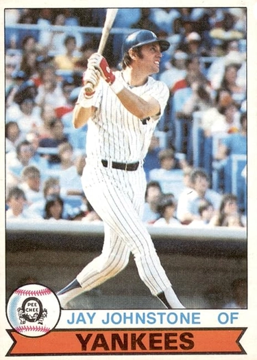

Jay Johnstone
Career Highlights & Facts
(Facts are AI-generated and may require verification)
- Known as a legendary clubhouse prankster who once cut a teammate's locker down to miniature size.
- Served in the Marine Corps Reserve during the early stages of a professional career.
- Authored multiple books detailing humorous behind-the-scenes antics from a long professional tenure.
Would you like to find out more about Jay Johnstone?
The flake – “an odd or eccentric player; a kidder or comic”
– is an all-but-vanished species in major-league baseball these days. In 2003, writer Dave Joseph lamented, “Sadly, there are fewer creative thinkers these days in baseball. There are fewer flakes, if you will, who break up the monotony of an endless season played, for the most part, by robotic athletes afraid to express opinion or originality.”
Outfielder Jay Johnstone was one of the premier flakes in big-league history. As Dave Joseph added, a bunch of tattoos doesn’t fill the bill. “You need talent. You need smarts. You need to have a mind of your own and give something to the game.” Johnstone qualified on all counts. He was good enough to play 15 full seasons in the majors and parts of five others from 1966 to 1985. He was largely a platoon and role player, starting over 100 games in only three of those years – but he had a solid lefty bat, providing 102 career home runs and a .267 batting average.
He was also one of the game’s craftiest pranksters and better storytellers, as he recounted in three entertaining books. His gags were innumerable, and among the best was trapping
Tommy Lasorda
(whom he liked to impersonate by padding himself with pillows) in the manager’s room at Dodgertown by tying his doorknob to a tree and stealing the mouthpiece from his telephone. Johnstone’s maxim was never to hang around to see the results of a prank, because that gives you away as the perpetrator. It’s even better to frame someone else, as he did by surreptitiously wiping chocolate on
Jerry Reuss
’s pants leg after sticking a gooey chocolate brownie in Steve Garvey’s glove. “In perhaps his greatest stunt, he slipped into the team’s Dodgertown clubhouse with carpenter’s tools and cut
Ron Cey
’s locker down to penguin size, putting a tiny stool in front of it.”
John William Johnstone, Jr. was born on November 20, 1945, in Manchester, Connecticut. His family moved to California when Jay was “just a three-year-old pup.”
His father, Jack Johnstone, was in combat in the South Pacific with the US Army in World War II.
During the war, he met an Australian woman, Audrey Whebell, and they married. “At one time he was an accountant back east,” said Jay in 2011, “but when we moved, he was with Supreme and Driftwood Dairy.” Jack and Audrey had three children, of whom Jay was the first, followed by a brother and a sister.
In 1968 Johnstone recalled to Ed Rumill of the
Christian Science Monitor
that his father greatly influenced his competitive spirit. “I’d get three hits in a Little League game and be afraid to face him. He’d want to know why I didn’t get four. I’d always know what his reaction would be.”
Jack Johnstone was good enough to sign with the St. Louis Cardinals, but he never got a chance to play pro ball because he went into the service.
For a while, the Johnstone family lived in Arcadia, a northeastern suburb of Los Angeles next to Pasadena. Then they moved to West Covina, which is about 20 miles east of downtown Los Angeles.
Author Kevin Nelson described Jay’s early years in his book
The Golden Game: The Story of California Baseball
. “The lefty-hitting, righty-throwing Johnstone easily moved up through the youth ranks: Little League, Pony League, American Legion, and Edgewood High, where he starred in football and basketball in addition to baseball.” He quoted Johnstone on “the carefree life of a suburban Southern California teenager: ‘Crewcuts, Pendleton shirts, white socks, loafers, cars, hangin’ out in the sunshine, listening to music, playing sports, and looking at girls. What else was there?”
In 1976 Johnstone told Allen Lewis of the
Philadelphia Inquirer
, “I was a T-formation quarterback in football, and that might have been my best sport then. I had 35 college football scholarship offers, and I had already signed a letter of intent for one of them. Then the Angels came along and I decided to play baseball.” On June 30, 1963, the 17-year-old signed for a bonus of $35,000 in progressive installments, “plus a smaller amount for my parents.”
The scouts were Tufie Hashem and Ross “Rosey” Gilhousen, who reported to California Angels farm director
Roland Hemond
.
Johnstone reported to San José in the California League, where he batted .252 in 48 games. Returning to the Bees in 1964, he improved to .291 in 126 games. After that season, a month before his 20th birthday, Jay enlisted in the Marine Corps Reserve. He received basic training in Camp Pendleton and was able to play the 1965 season, moving up to El Paso in the Texas League (Double-A) after hitting .301 in 97 more games at San Jose. He then served at a naval base in Los Alamitos, receiving his discharge in the spring of 1966 without ever being called to serve “in country” in Vietnam.
In 81 games for Seattle of the Pacific Coast League, Johnstone hit .340 with 7 homers and 42 RBIs in 1966. The Angels called him up after they learned that
Rick Reichardt
was suffering from a congenital kidney blockage (Reichardt’s right kidney was removed soon afterward, ending his season). Johnstone made his major-league debut on July 30, 1966. In his first three games, he went 6-for-12. His first RBI was a game-winner, a seventh-inning single to center at Anaheim Stadium against the New York Yankees. “I like everything I’ve seen of him,” California manager
Bill Rigney
said.
Though he is best remembered as a corner outfielder, Johnstone came up as a center fielder, and he was well regarded defensively. However, he picked up a lot of pointers on fielding from one of the best in the business at that time: his roommate, veteran
Jimmy Piersall
. “I thought I had outfielding all figured out,” Johnstone told Ed Rumill. “He changed it completely. He taught me everything. I’d say that conservatively, he made a 50 percent improvement in my fielding.”
One wonders how much of Piersall’s zaniness rubbed off on the rookie too – or if in fact there was further for Jay to go there. Eight years later, though, Johnstone said, “Jimmy Piersall once told me that as long as it’s not derogatory, get your name in the paper any way you can. That’s never been my goal, but I never minded all the talk about being a flake.”
Johnstone got off to a good start in 1967. As Bill Rigney recalled, “Then he fouled a ball off his ankle and never was right. In fact, he’d taken the center-field job away from
José Cardenal
, temporarily at least, when he was injured.”
He slumped and fell below the Mendoza Line, and after Independence Day the Angels sent him down to Seattle. He returned for September and (after Cardenal had been traded) made the Opening Day roster again in 1968.
That May,
Joe Gordon
(then a special batting instructor for the Angels) said, “Jay has all the abilities you expect in a good young hitter. … He may need a little more time. But he has a natural bat.” Johnstone also gave credit to his minor-league manager,
Rocky Bridges
. “Rocky knocked the impatience out of me.”
It was much the same story in 1968, though, as the Angels optioned him to Triple-A again in June.
At some point during his early years with the Angels, Johnstone acquired a lasting nickname: Moon Man. Catcher
Bob “Buck” Rodgers
liked to tell one version of the story. “One day he lost a ball in the sun, but when he came back to the bench he said, ‘I lost it in the moon.’”
The connections with outer space were fitting, especially when the whole nation was watching the Apollo missions. In 1981, though, Johnstone told Jim Murray of the
Los Angeles Times
that it came about as he sneaked back into his hotel room after curfew, cat-burglar style, and told another roommate, “Out of the way, you’re standing in my moonlight.”
Johnstone got his first taste of winter ball in Puerto Rico in 1968-69, helping the Ponce Leones win the league championship. He told author Thomas Van Hyning about having to help push the team bus over mountain roads, adding, “I think I had a better experience, culture-wise, off the field than playing the game.”
Johnstone then set a personal high in games played (148) and at-bats (540) during the 1969 season. He posted a batting line that was not bad but not outstanding either: .270-10-59. He tailed off to .238-11-39 in 1970, and that November, the Angels sent him to the Chicago White Sox as part of a six-player deal in which they got back Gold Glove center fielder
Ken Berry
. “They never seemed willing to give me a steady job and say they’d give me time to develop no matter what I did,” said Jay in 1976.
Johnstone’s first season with the White Sox was good: .260 with a career-high 16 homers. But as he said in 1976, “They told me they wanted me swinging for home runs after that, and I got all fouled up.” His average dropped to an anemic .188 in 1972. He corrected his bad batting habits, though, with the help of coaching from Benny Lefebvre, father of
Jim Lefebvre
. “Benny put me on isometrics and weight training and he changed my stance completely. … He made me shorten [my swing] up, and become a line-drive hitter.”
During spring training 1973, Johnstone asked for his release after refusing to take the maximum 20 percent pay cut that the White Sox wanted to impose. At the end of March, he caught on with the Oakland A’s; owner
Charles O. Finley
was the only one willing to give him a chance.
He was on the A’s roster in April and early May, as well as July, but he also had to return to Triple-A for a while, playing 69 games for Tucson in the PCL. He was not on the postseason roster as the A’s won their second of three straight World Series.
Returning to the Puerto Rican Winter League for the winter of 1973-74, Johnstone hit over .300 for the Caguas Criollos. He tied for the league lead in RBIs with
Benny Ayala
at 46. His manager was
Bobby Wine
, a coach with the Philadelphia Phillies. When spring training came around, since Oakland was overloaded with outfielders, Finley arranged a tryout with the St. Louis Cardinals. Jay hit well and looked to have made the club, but roster machinations kept him from playing a game for the Cards.
“I had a chance to go to Japan, for a lot of money,” Johnstone said. “But I knew I could play in the majors and I wanted to prove it.” Shortly thereafter, on Bobby Wine’s recommendation, he signed a minor-league deal with the Phillies.
He played 57 games for their top affiliate, Toledo in the International League – but after that, he never had to go back to the minors. Mud Hens manager
Jim Bunning
recommended him to the big club, even though the two had nearly come to blows because Johnstone liked to push the no-nonsense Bunning’s buttons with his little antics.
Johnstone played some of his best ball in Philadelphia, just as the team was climbing from the cellar of the NL East and developing into the club that reached the playoffs in three straight years from 1976 to 1978. In 1975 the Phillies finished second, and Johnstone – coming off a .346-9-46 winter for Caguas – hit .329-7-54 in 122 games. He followed up with a .318-5-53 line for the 1976 club. During the playoffs against the Cincinnati Reds that year, it wasn’t Jay’s fault that the Phillies were swept in three games. He went 7-for-9 with a walk.
“I’m proving to a lot of people they were wrong about me,” Johnstone told Allen Lewis after the season. “They’re the reason I’ve worked so hard to get where I am.” Lewis described the hours Johnstone put in taking extra batting practice and honing his swing by hitting the ball off a tee.
Johnstone had another good year in 1977 (.284-15-59), but after a poor start the following year, Philadelphia traded him to the New York Yankees on June 14 with
Bobby Brown
for
Rawly Eastwick
. There he won his first World Series ring, although he saw no action in the playoffs and got into just two games without a plate appearance as the Yankees beat the Los Angeles Dodgers for the championship.
While he was with the Yankees, Johnstone played under manager
Billy Martin
, whom he described as “when it comes to strategy, the most astute man that I’d ever met.”
Although playing time was again scanty for him in the first half of the 1979 season, that changed on June 15, when the Yankees dealt him to the San Diego Padres for reliever
Dave Wehrmeister
. Jay hit well for the Padres (.294 in 225 at-bats), though he had no homers. He became a free agent that November and signed about a month later with the Dodgers, where he spent two seasons and a fraction of a third – and his exploits as a prankster flowered fully.
Johnstone was part of his second World Series champion team during the strike year of 1981. He was hitless in two at-bats during the NL Championship Series against Montreal, but he went 2-for-3 against the Yankees, including a two-run pinch-hit homer in Game Four that brought the Dodgers to within a run at 6-5, in a game that they wound up winning 8-7.
The Dodgers Encyclopedia
said that it “may have been the key hit of the entire Series.”
Los Angeles released the veteran, by then 36 years old, in late May 1982. Within a week, though, he signed with the Chicago Cubs. He spent a couple of moderately productive seasons there, but his at-bats were halved in 1983 and again in 1984, when he served largely as a pinch-hitter (and his pranks failed to amuse manager
Jim Frey
). After obtaining
Davey Lopes
from Oakland, the Cubs released Johnstone in September 1984. Cubs general manager
Dallas Green
hoped to have him reinstated as a player, or bring him back as a coach, but he was deprived of another chance to go to the playoffs.
In February 1985 Johnstone returned to the Dodgers as a free agent. Tom Lasorda had a fondness for keeping veteran pinch-hitters at the end of his bench, men like
Manny Mota
Vic Davalillo
, and
José Morales
. The 39-year-old Johnstone spent the entire season with Los Angeles – albeit with a long stretch on the disabled list. He delivered two hits and a walk in 17 games without appearing once in the field. Despite such sparse activity, he remained on the postseason roster, going 0-for-1 against the Cardinals. At the end of October, the Dodgers released him, ending his big-league career.
Johnstone then focused on his auto-parts business, which he had been pursuing part-time for several years. Yet even while he was still active, he had begun to make good use of all the stories he had accumulated across his 20 big-league seasons. With co-author Rick Talley, he published his first book,
Temporary Insanity
, in 1985.
Over the Edge
followed in 1988, and 1990 brought the duo’s last effort to date,
Some of My Best Friends Are Crazy
. This last was subtitled “Baseball’s Favorite Lunatic Goes in Search of His Peers.”
By then Johnstone had moved into broadcasting. He was the original host of the ESPN show
The Lighter Side of Sports
in 1987 and 1988. He hosted a couple of other shows in a similar vein,
Baseball’s Funniest Pranks
and
Super Sports Follies.
He was also with the Yankees in 1989 and 1990 (working with John Sterling on WABC’s radio broadcasts) and the Phillies in 1992 and 1993 (for the Philadelphia cable channel PRISM, with Chris Wheeler and former teammate
Garry Maddox
).
Johnstone left PRISM by mutual consent in 1994. He took three years off, visiting US troops in Saudi Arabia, Kuwait, and Germany. He also held clinics in Japan under the aegis of the World Children’s Baseball Federation and visited American children’s schools in London, Paris, and Brussels.
After that Johnstone has kept busy in a new variety of ways. In the late 1990s he helped started a part-time sports auction/charity fundraising business called Sporthings, which developed into Sporthings & More, handling items from other areas including entertainment and music. He also traveled the country as a speaker at both corporate and social events. He participated in baseball clinics, fantasy camps, and charity golf tournaments. In 1987 he began hosting his own Charity/Celebrity Golf Tournament every January on Martin Luther King’s birthday to raise money for children in need. He also narrated several videos, including
The Hitter’s Commandments
, and remained involved in broadcasting with the Fox network.
In 2006 Johnstone became part of a group that announced the formation of the independent Continental Baseball League. This circuit operated for four seasons (2007-2010) with four to six teams based in New Mexico, Louisiana, and Texas. He talked about the league in 2011. “Bob Ibach, who was a friend of mine and a PR man with the Cubs, started it with Ron Baron. The idea was to help players get back to the majors or reach a higher level. But it was always set back, either by some unusual act like a flood or by problems with financially unstable owners. They persevered, but it got to be too much. Ron Baron lost about half a million dollars. But it was a great idea for a while, a lot of fun.”
August 2010 brought the news that Johnstone had become annual spokesman for Hope4Heroes, a nonprofit organization designed to benefit military veterans. Given his father’s background and his own in the military (he served for four years total in the Marine Reserve), his support for this cause was not surprising. He said, “I am really, really excited about this. … I wanted to come back and do my part to help out.”
Johnstone and his wife, Mary Jayne Saunders, were married on November 25, 1967. Mary Jayne was an actress, starting as a girl of 5 in the late 1940s. Her career in movies and later TV continued until she got married, whereupon she retired from acting. The Johnstones had one daughter, Mary Jayne Sarah.
As far back as 1990, Johnstone saw flakes and pranksters passing from the major-league scene. He pointed to the media, saying, “[Players] can’t afford to do anything crazy, because they’re afraid it will end up in the papers and make them look bad. … I couldn’t have the overall, wide fun that I used to have when you were able to get away with a lot more. Times change, the game’s changed.”
Jay Johnstone, however, remained an easygoing and fan-friendly personality.
Johnstone died at the age of 74 on September 26, 2020, in Granada Hills, California. He’d been suffering from dementia, but COVID-19 caused his death. An array of obituaries celebrated his baseball achievements, humorous personality, and pranks. A notable fact was that his time of death occurred around the same time Dodger Stadium was plunged into darkness because of a power outage.
An earlier version of this article appeared in “
Mustaches and Mayhem: Charlie O’s Three Time Champions: The Oakland Athletics: 1972-74″
(SABR, 2015), edited by Chip Greene.
Acknowledgments
Grateful acknowledgment to Jay Johnstone for his memories (telephone interview, June 14, 2011).
Quotes on the Flakiness and Pranks of Jay Johnstone
“What makes him unusual is that he thinks he’s normal and everyone else is nuts.” —
Danny Ozark
“I don’t rehearse anything. I just do what my instincts tell me to.”
“There are a lot of peaks and valleys in this game, and this was a way for me to come back up. Some guys to turn to drugs; some guys couldn’t cope; some guys, the stress got to them. My way was to make people laugh. And laughter has helped me go on to the next level each time.”
baseball-reference.com
retrosheet.org
sporthings.net
imdb.com
Crescioni Benítez, José A.,
El Béisbol Profesional Boricua
(San Juan, Puerto Rico: Aurora Comunicación Integral, Inc., 1997).
Paul Dickson,
The New Dickson Baseball Dictionary
(New York: Harvest Books, 1999(, 198.
Dave Joseph, “Baseball Aches for Flakes,”
Baseball Digest
, August 2003, 64.
Gordon Edes, “Johnstone back in Dodger Blue, But Who Knows for How Long?”
Los Angeles Times/Washington Post
News Service, April 13, 1985.
Ed Rumill, “Johnstone Learns What ‘Counts’ in Playing Hitters,,”
Baseball Digest
, May 1968.
“Jay Johnstone steps to the plate for U.S. service veterans.” Mysanantonio.com, August 2, 2010.
Rumill.
Rumill.
Kevin Nelson,
The Golden Game: The Story of California Baseball
(Berkeley, California: Heyday Books, 2004), 310.
Alle Lewis, “Jay Johnstone’s Long Journey to Success,”
Baseball Digest
, December 1976, 57.
Nelson, 310.
“Angels’ Jay Johnstone Helps Only His Team,” Associated Press, August 2, 1966.
Rumill.
Lewis, 61.
Rumill.
Rumill.
Paul Dickson,
Baseball’s Greatest Quotations
(New York: HarperCollins, 2008), 384.
Jim Murray, “Jay Johnstone: The Man Who Fell to Earth,”
Los Angeles Times
, September 4, 1981.
Thomas Van Hyning,
Puerto Rico’s Winter League
(Jefferson, North Carolina: McFarland & Co., 1995), 39.
Lewis, 57.
Lewis, 58.
Lewis, 59.
Lewis, 59-60.
Frank Dolson,
Jim Bunning: Baseball and Beyond
(Philadelphia: Temple University Press, 1998), 168-170.
Dolson, 57, 60.
Brian Jensen,
Where Have All Our Yankees Gone?
(Lanham, Maryland: Taylor Trade Publishing, 2004), 139.
William F. McNeil,
The Dodgers Encyclopedia
Champaign, Illinois: Sports Publishing LLC, 2003 (second edition), 239.
Jensen.
Mike McGovern, “Jay Johnstone sees light side.”
Reading
(Pennsylvania)
Eagle
, January 19, 1990, 11.
Verdi, Bob. “Pranks for the memories.”
Chicago Tribune
, April 16, 1979: D4.
McGovern, op. cit., loc. cit.
Full Name
John William Johnstone
Born
November 20, 1945 at Manchester, CT (USA)
Died
September 26, 2020 at Granada Hills, CA (USA)
Stats
Baseball Reference
Retrosheet
1972-74 Oakland Athletics
Career Totals
| WAR | AB | H | HR | BA | R | RBI | SB | OBP | SLG | OPS | OPS+ |
|---|---|---|---|---|---|---|---|---|---|---|---|
| 16.5 | 4703 | 1254 | 102 | .267 | 578 | 531 | 50 | .329 | .394 | .722 | 103 |
Statistics via Baseball-Reference.com
The Original Clue